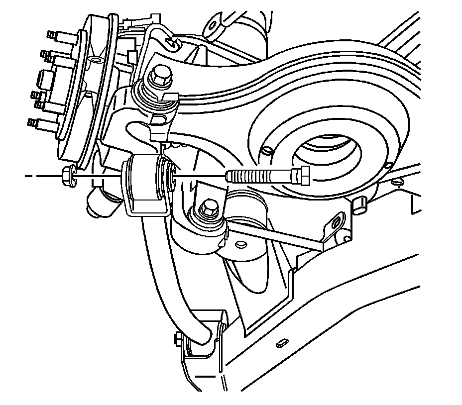
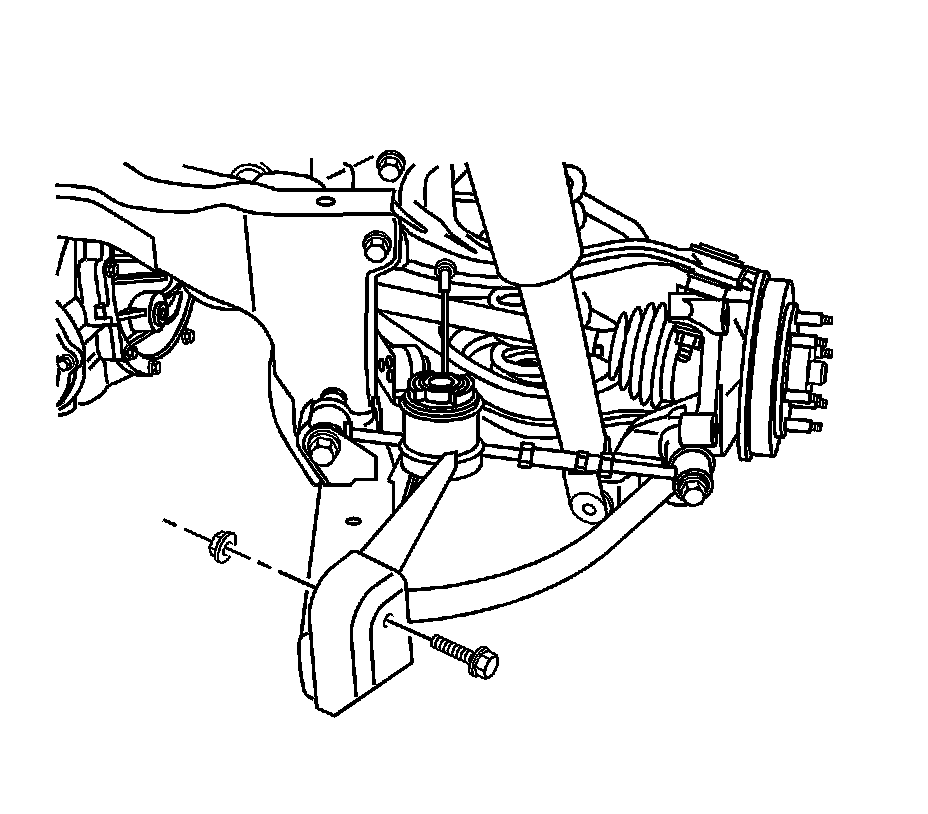
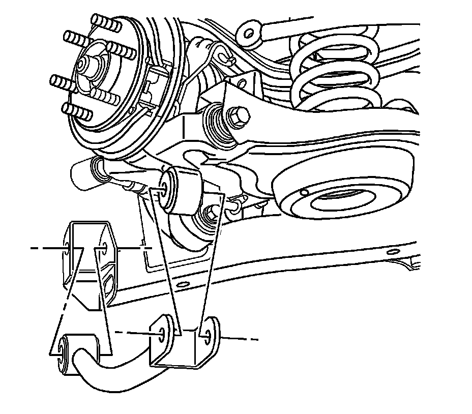

Trailing Arm: Service and Repair
Trailing Arm Replacement
Removal Procedure
1. Raise and support the vehicle. Refer to Lifting and Jacking the Vehicle (Service and Repair) .
2. Remove the tire and wheel. Refer to Tire and Wheel Removal and Installation (Service and Repair) .
3. Remove the automatic level control link from the upper control arm.
4. Remove the brake pipe bracket retaining nuts.
5. Remove the brake pipe bracket from the mounting studs.
6. Support the lower control arm with a suitable jack.

7. Remove the trailing link to knuckle nut.
8. Remove the trailing link to knuckle bolt.
9. Remove the jack.
10. Support the frame with a suitable jack.
11. Remove the front bolts from the frame.
12. Lower the front of the rear frame.

13. Remove the trailing link to frame nut.
14. Remove the trailing link to frame bolt.

15. Remove the trailing link from the vehicle.
Installation Procedure
1. Install the trailing link to the vehicle.
Important: Loosely install the trailing link before tightening.
2. Install the trailing link to frame bolt.
3. Install the trailing link to frame nut.
4. Raise the frame with a suitable jack.
Notice: Refer to Fastener Notice (Fastener Notice) .
5. Install the front bolts to the frame.
Tighten the bolts to 265 N.m (195 lb ft).
6. Remove the jack.
7. Support the lower control arm with a suitable jack for alignment of the trailing link and the knuckle.
8. Install the trailing link to knuckle bolt.
9. Install the trailing link to knuckle nut.
* Tighten the trailing link to frame nut to 150 N.m (111 lb ft).
* Tighten the trailing link to knuckle mounting bolt to 170 N.m (125 lb ft).
10. Install the brake pipe bracket from the mounting studs.
11. Install the brake pipe bracket retaining nuts.
Tighten the bolts to 10 N.m (89 lb in).
12. Install the automatic level control link to the upper control arm.
13. Install the tire and wheel. Refer to Tire and Wheel Removal and Installation (Service and Repair) .
14. Lower the vehicle.